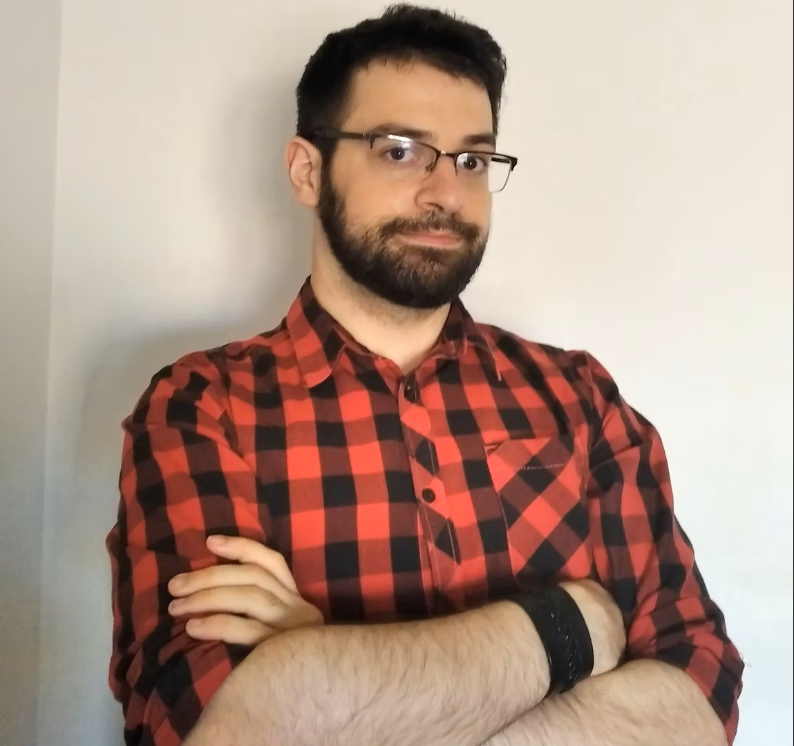
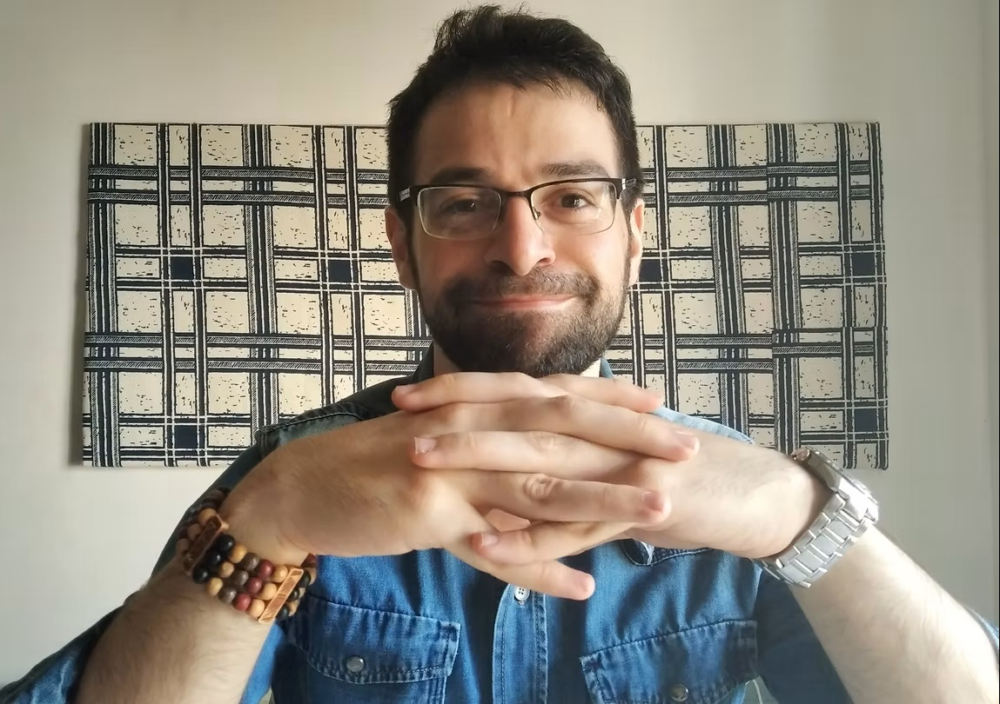
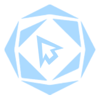
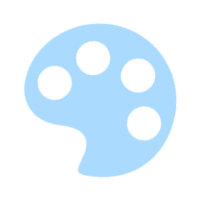
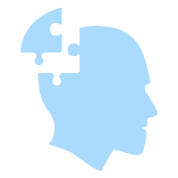

Galleria



il Portfolio
di Vito
PALAZZOLO
Ho iniziato la maturità nel campo della ristorazione come cameriere per diversi anni, ma l'interesse artistico ha prevalso, portandomi a iniziare un percorso come Graphic Designer. Ho sempre avuto molta passione nella manipolazione di contenuti multimediali informatici. Da lì, mi sono interessato ulteriormente sull'interaction design, e di conseguenza allo studio del funzionamento degli oggetti oltre che alla loro forma. Mi sono dedicato a mansioni artistiche, pratiche e tecniche. Oggi studio coding, e chissà dove mi porterà.

Grafica digitale, storia del Design, impostazione di progetti per l’impresa (architettura, brand, editoria) e progettazione 3D per l’oggettistica
Accademia di Belle Arti Kandinskij (Trapani)
Valutazione Finale - 110 / lode
Corso Online di Grafica digitale e concetti base dell'editoria
wetrainitaly
300 ore
Istituto Alberghiero “Ignazio Vincenzo Florio” I.P.S.E.O.A. (Erice, TP)
Valutazione Finale - 86/100

Progettazione

Arte

Problem Solving
Se hai un progetto in mente o vuoi collaborare, sarò felice di discuterne con te.
📧 palazzolovito94@gmail.com
📞 +39 380 7745202
Scarica il CV